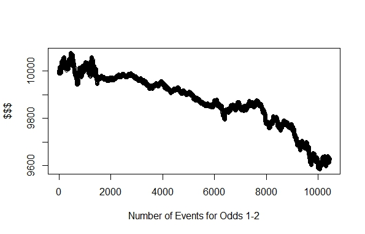
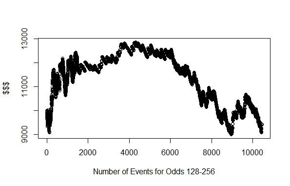
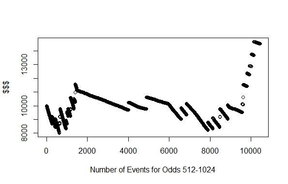

Betting payout odds in horse racing are based on a parimutuel betting strategy. The pool of money wagered, minus contestant prizes and “house” cut of about 15%, is divided so all winning combinations share the winnings. This is similar to a lottery payout, except the number of wagers on each horse is known, while a lottery doesn’t know how many wagers are on each number combination until after the numbers are drawn. Because the odds change based on wager amounts placed, the higher odds will have a lower payout per wager. Hence a ‘long-shot’ horse (a horse with few wagers) will share the prize with fewer betters and will receive a higher payout. Our goal with this research project is to increase the payout for an individual, and the following hypothesis aims to create data analysis experiments on the nature of the betting methods provided by institutions.
Datasets for this study were obtained from the biggest betting exchange worldwide: Betfair (TheGuardian.com). Betfair started its operations in 2000, with a steady growth that allowed the purchasing of England’s biggest horseracing publishing company, Timeform, in 2006. In 2009, Betfair purchased the TVG Network in the United States, which allowed for Betfair to offer wagering services in 31 of the States. Betfair also reached a deal in 2009 with the New York Racing Association, which allowed for Betfair to offer wagering and exchanges on Aqueduct’s thoroughbreeding races (ThoroughbredTimes.com). More recently in 2015, Betfair merged with the biggest bookmaker in Ireland, Paddy Power, which cemented Betfair as the biggest betting exchange operating across the globe. Although public access to archived data only extends back to 2007, the dataset Betfair holds on sport gamblings far surpass those offered by any other research firm or corporate entity such as ESPN. Therefore, our datasets for this research topic are exclusively gathered from Betfair.
Betfair offers an up-to-the-minute database via their API. However, this requires an active account. For our purposes, we require historical data rather than the latest data. Betfair provides previous days’ racing data freely through its public website at the following link: https://promo.betfair.com/betfairsp/prices/index.php. These .csv files date back to 2007 with data from horse racing in multiple countries, to include the United Kingdom, Ireland, Australia, the United States of America, and South Africa. Collecting the off of their server was a trivial task with web-browser plug-in tools such as “DownloadThemAll”, which scrapes a server and downloads all dependent files from a public site.
Each .csv file provided by Betfair has a patterned name of their ‘exchange-price-location-winnings-date’. The files are formatted the same way internally. Each file represents the days’ worth of races (times based out of Gibraltar). Attributes in these files include the ‘Event ID’, ‘Name of Runner (horse)’, ‘Win/Lose (or ‘Place’; effectively 1st place, 2nd place, or loss), ‘Starting Price’ on wagers, and amount that each wager sways up to the time of the race as well as the amount of trading through the Betfair exchange.
Our first hypothesis postulates that a favored horse is not the most likely to win; therefore, betting against the favored horse should provide a bigger payout. According to some analysts, the favored horse is simply a popularity contest (USAPlayers.com), so a bet on a favored horse simply leads to a smaller payout divided amongst many participants. We will look into our data set to show that the favorite horse is not necessarily the winner.
This first hypothesis brings us to the next approach in our analysis: Betting on ‘lower odds’ (less favored) horses will provide a higher payout. We propose that over the long run, placing wagers on horses with greater payouts could be a smarter bet given an enough length of time. Since the payout of ‘lower-odds’ bets is higher than bets placed on favored horses, bets of this nature afford a higher margin of losses to increase payout over time.
An alternative to picking individual horses is to create wagers that fall into a ‘window of odds’. Our data should show that when the odds vs the winner is averaged together, a grouping will emerge indicating where smart bets should be placed. By comparing odds to actual winners, we believe the data analysis will show that inside of an odds window, say between 4-1 and 8-1, will provide the best chance of payout over time.
All of the data came from multiple files with varying cryptic names. So we first had to sort through and sift out all of the data files that we did not actually need. Betfair had data about greyhounds in particular that we decided to ignore. Then, in order to make it easier for the computer to process the files. We removed the file's names and replaced them with a more iterator style format for the computer to iterate through.
In the end, we had about 10,500 data sets gathered from Betfair for us to use in R, with an average of 120 rows of data per set. Some of the race events did not have betting data included, so those had to be skipped over. But then, our data processing could begin.
First, for each event contained, we split the horses into 10 groups. The first group was defined by horses having a betting wager of $1 to $2, then the next group had a betting wager of $2 to $4, and each group was defined by the wagers increasing by a power of 2, up to $512 to $1024. Then we took a single horse from each group randomly.
Then we checked if each horse won or lost that race. If there was a group not represented in that race, we just skipped it. Going through the data in this way, we saw that the win percentage for each group dropped as the wager price for the group increased.
With these percentages, the data suggests that the horses with the lowest betting wager win more often. But that does not mean that more money is gained from betting on those horses, because the payout from them is smaller. So, in those wager groups again, we began a simulation where there are 10 groups of people each starting with $10,000. Each person would only bet on horses in a specific wager group. If a horse was present in their group, they would bet $1 on one of those horses. If they won, they would get their payout. After each day, we would gather the end amount of money that they had, and stored it, and then moved on with the next day, the groups maintaining their winnings (or losses) throughout the simulation. The result was that the lowest betting wagered horses actually did not gain money, but was slowly on the decline. The horses with a higher wager performed better for their betters.
Here is the result of probabiliteis that the most favored horse would win a race from our simulation:
2009: 47.9% win
2010: 47.5% win
2011: 48.0% win
2012: 44.2% win
2013: 42.7% win
2014: 45.6% win
2015: 46.0% win
2016: 45.3%win
Top 1 to 2 horses: 60.9% win
Top 2 - 4 horses: 33.4% win
Top 4 - 8 horses: 17.5% win
Top 8 - 16 horses: 9.0% win
Top 16 - 32 horses: 4.7% win
Top 32 - 64 horses: 2.3% win
Top 64 - 128 horses: 1.1% win
Top 128 - 256 horses: 0.6% win
Top 256 - 512 horses: 0.3% win
Top 512 - 1024 horses: 0.2% win
Assuming the data set is complete, that is that all horses that competed, regardless of odds, is included and that the data is correct: placing a $1 wager everytime the LONG shot horse, with odds greater than 512 to 1, would result in the largest net winnings.



"Betfair NYRA Reach Wagering Agreement." Thoroughbred Times. N.p., 02 Nov. 2009. Web. 26 Oct. 2016.
"Display Measures Dynamically." Tableau Software. N.p., 16 Aug. 2016. Web. 26 Oct. 2016.
"Horse Betting Guide." U.S. Players. N.p., n.d. Web. 26 Oct. 2016.
"Merge CSV Files or TXT Files in a Folder - Using Excel or CMD." The Analyst Cave Excel VBA Programming and More. N.p., Mar.-Apr. 2016. Web. 26 Oct. 2016.
"Will Betfair Become a Player in the U.S.? - Horse Racing News | Paulick Report." Horse Racing News Paulick Report. N.p., 2010. Web. 26 Oct. 2016.
Wood, Greg. "World's Biggest Betting Exchange Betfair and Paddy Power to Merge." The Guardian. Guardian News and Media, 2015. Web. 26 Oct. 2016.